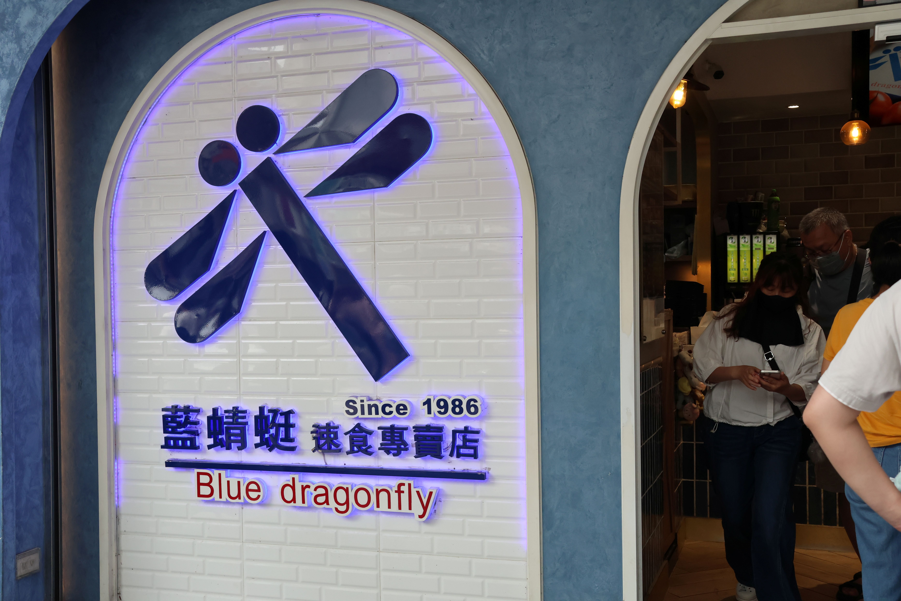
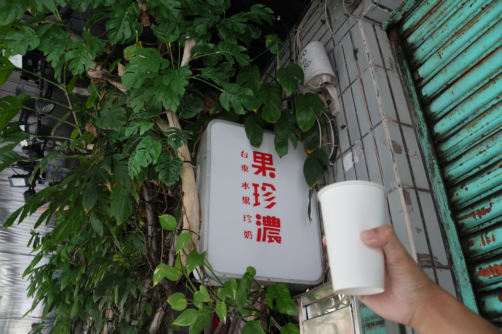
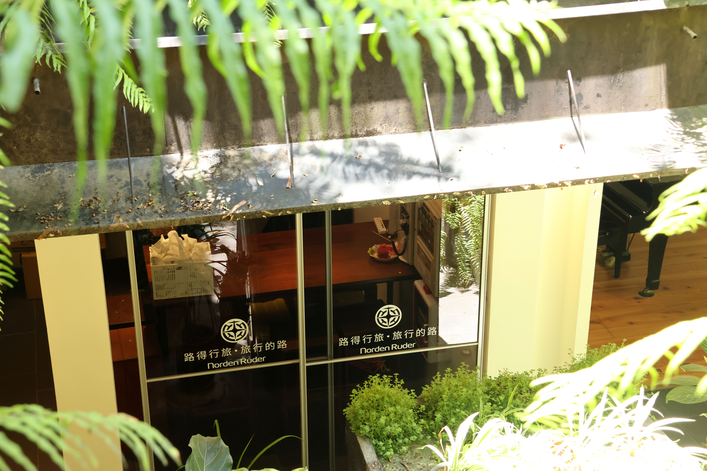
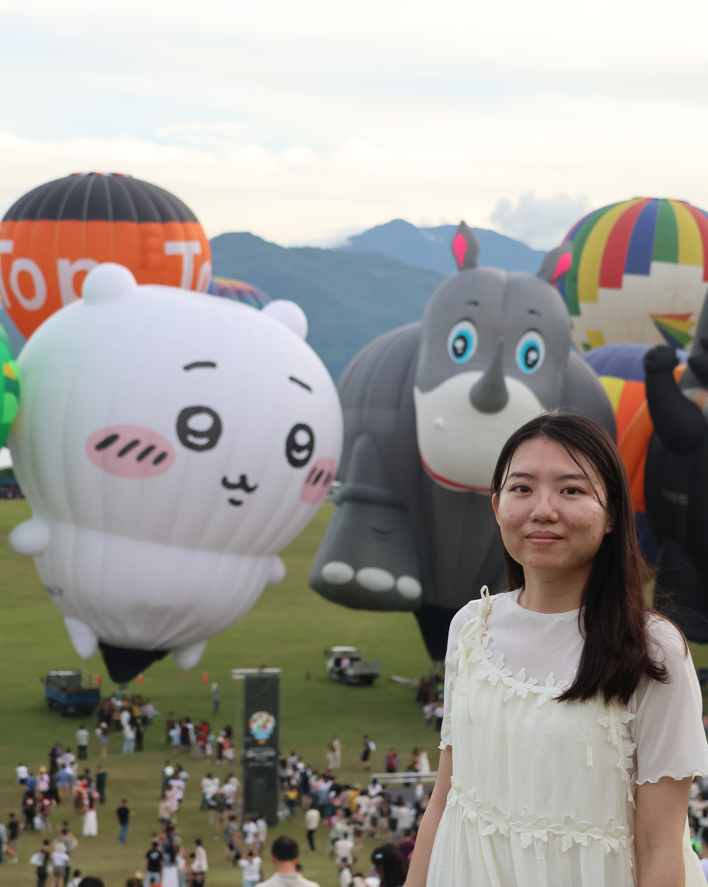

每年夏天最受矚目的臺灣國際熱氣球嘉年華盛大登場！2026 年全新亮相的 吉依卡哇（Chiikawa）造型熱氣球，一公開便吸引大批旅客前往朝聖， 成為今年暑假最熱門的打卡景點之一。
這次與萱也非常期待一年一度的熱氣球嘉年華，因此安排了一趟兩天一夜的臺東自由行。除了欣賞夢幻熱氣球外，還品嚐了臺東在地美食、入住舒適旅店；隔天一早則前往杉原灣，欣賞湛藍海景與細緻沙灘，感受沁涼的海水，悠閒享受東海岸慢步調的旅行時光。
2026 臺東熱氣球兩天一夜行程
| 時間 | 行程安排 |
|---|---|
| Day 1｜中午 | 抵達臺東車站 |
| 14:00 | 藍蜻蜓速食專賣店｜午餐 |
| 14:30 | 果珍濃｜水果飲品 |
| 15:00 | 路得行旅｜Check In |
| 17:00 | 鹿野高台｜臺灣國際熱氣球嘉年華 |
| 20:00 | 六扇門｜晚餐 |
| Day 2 | |
| 07:30 | 中華早點｜早餐 |
| 08:00 | 杉原灣 | 欣賞海景 |
| 13:00 | 貴族世家｜午餐 |
| 15:20 | 返回高雄 |
第一天｜臺東車站 → 藍蜻蜓 → 果珍濃 → 路得行旅 → 鹿野高台 → 貴族世家
中午抵達臺東車站
搭乘臺鐵自強號從高雄新左營車站出發前往臺東車站，抵達台東車站後，正式展開兩天一夜的旅行。暑假期間建議事先租好汽車或機車，往返市區及鹿野高台都會更加方便。
藍蜻蜓速食專賣店

第一站來到臺東最有名的炸雞名店──藍蜻蜓速食專賣店。酥脆的炸雞外皮搭配鮮嫩多汁的雞肉，每到用餐時間總是大排長龍，也是不少旅客來臺東必吃的經典美食。
與萱這次點了一份炸雞全餐，套餐包含雞腿、雞翅各一塊，搭配小雞塊、少許薯條以及一杯飲料，份量剛剛好。
藍蜻蜓的炸雞每次吃都讓人驚豔，外皮炸得又薄又酥脆，咬下去還能感受到鮮嫩多汁的雞肉，每一口都令人回味無窮。每次吃完都有種意猶未盡的感覺，總會忍不住覺得當初應該再多點一份。
果珍濃

下午來杯冰涼的水果飲品最消暑。 果珍濃使用臺東當季水果現打果汁， 芒果、鳳梨及綜合水果都是人氣商品， 天然又清爽，非常適合炎熱夏天。
路得行旅

下午三點左右先返回市區入住路得行旅。 旅館位置便利，附近生活機能完善， 房間乾淨舒適，是不少自由行旅客推薦的住宿選擇。
稍作休息後，準備前往今天最期待的行程──鹿野高台熱氣球嘉年華。
鹿野高台熱氣球嘉年華

每年夏季最受歡迎的活動就是臺東熱氣球嘉年華。 2026 年最大的亮點，就是首次登場的 吉依卡哇（Chiikawa）造型熱氣球。
當熱氣球緩緩升空，搭配鹿野高台翠綠草原與藍天白雲， 整個畫面十分療癒，也吸引許多遊客駐足拍照。
若剛好遇到光雕音樂會， 還能欣賞熱氣球配合燈光及音樂演出， 現場氣氛更加浪漫，非常值得安排一趟旅行。
旅行小提醒
- 建議提早一小時抵達停車。
- 請攜帶帽子、防曬及飲用水。
- 山區傍晚風較大，可準備薄外套。
- 如遇下雨或強風，活動可能取消。
晚餐｜貴族世家
結束熱氣球行程後返回臺東市區， 晚餐選擇貴族世家享用排餐。 除了主餐之外，自助吧提供沙拉、濃湯、 麵包、甜點及飲料，能補充一天旅行消耗的體力， 也是適合家庭聚餐的餐廳。
晚上返回旅館休息，準備隔天清晨前往海邊迎接日出。
第二天｜杉原灣日出 → 中華早點 → 返回高雄
清晨｜杉原灣迎接第一道曙光

凌晨從市區出發前往杉原灣，大約二十多分鐘即可抵達。 雖然天色仍然昏暗，但海邊已經有不少攝影愛好者及旅客等待日出。
隨著天空由深藍慢慢轉變為橘紅色，太陽從太平洋海平面緩緩升起， 陽光灑落在海面上形成金黃色光芒，整個畫面令人難忘。
杉原灣不像熱門觀光景點那麼擁擠， 可以靜靜欣賞海浪聲與日出的美景， 非常適合喜歡慢旅行的人安排在臺東旅程的早晨。
推薦拍照時間
- 日出前 30 分鐘抵達。
- 可攜帶腳架拍攝縮時攝影。
- 海邊風勢較大，建議攜帶薄外套。
早餐｜中華早點

看完日出後回到臺東市區， 來到在地人推薦的中華早點享用早餐。
店內提供各式中式早餐， 蛋餅、燒餅、油條、豆漿都是人氣商品， 價格平實、份量充足， 是不少旅客來臺東都會安排的一站。
- 推薦：原味蛋餅
- 推薦：燒餅油條
- 推薦：豆漿
- 推薦：飯糰
結束愉快的臺東之旅
享用完早餐後，返回住宿整理行李， 帶著滿滿的照片與回憶前往臺東車站， 搭乘臺鐵返回高雄， 結束這趟兩天一夜的熱氣球自由行。
雖然只有短短兩天， 卻一次收藏了臺東最具代表性的美食、 住宿、熱氣球以及海岸日出， 非常值得安排在暑假的旅行清單中。
旅行資訊
| 旅遊日期 | 2026 年 8 月 |
|---|---|
| 旅遊天數 | 兩天一夜 |
| 交通方式 | 臺鐵＋租車 |
| 住宿 | 路得行旅 |
| 主要景點 | 鹿野高台、杉原灣 |
常見問題 FAQ
2026 臺東熱氣球在哪裡舉辦？
主要活動地點位於鹿野高台， 每年夏季皆會舉辦熱氣球展演及光雕音樂會， 詳細活動時間可依官方公告為主。
吉依卡哇熱氣球每天都會升空嗎？
造型熱氣球是否展演， 仍須依照當天天候及風速決定， 建議出發前先查詢官方最新資訊。
臺東兩天一夜夠玩嗎？
如果以熱氣球、美食、市區及杉原灣日出為主， 兩天一夜相當充實； 若想安排伯朗大道、多良車站、 三仙台等景點，則建議三天兩夜。
本次行程總整理
- 臺東車站
- 藍蜻蜓速食專賣店
- 果珍濃
- 路得行旅 Check In
- 鹿野高台熱氣球嘉年華
- 貴族世家
- 杉原灣日出
- 中華早點
- 返回高雄